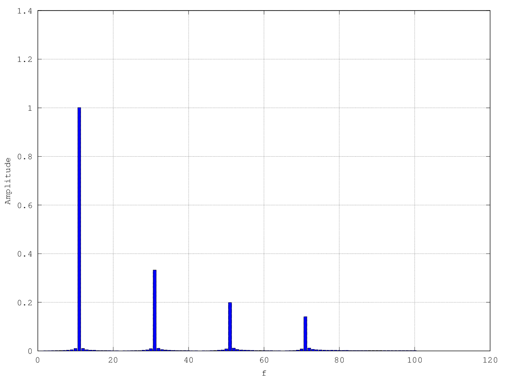

Web Audio API
The Modular Synth And Sound Processor at Your Fingertips
Shocking News
It doesn't work on IE
Philipp Stucki
Web Audio API Overview
- Very high level
- Modular routing
- Runs in its own thread
- Sample-accurate scheduled playback
- Low latency
- Parameter automation
- Output nodes: oscillator, sample player, live audio
- In/out nodes: filter, convolver, wave shaper, compressor
- Audio processing in JavaScript
- Spatialized audio for 3D effects
- Real time audio analysis
Browser Support
- Chrome: Yes
- Firefox: Yes
- Safari: Yes
- Opera: Yes
- iOS Safari: Yes
- Android Chrome: Yes
- Firefox Chrome: Yes
- Internet Explorer: Sorry...
AudioContext
- Creates all AudioNodes
- Contains the routing graph
- AudioDestinationNode is the final node
- Usually only a single AudioContext is used
AudioContext Interface
interface AudioContext : EventTarget {
// (...)
OscillatorNode createOscillator();
GainNode createGain();
DelayNode createDelay(optional double maxDelayTime = 1.0);
BiquadFilterNode createBiquadFilter();
ConvolverNode createConvolver();
// (...)
};
AudioNode
- Building block of an AudioContext
- Implemented by all input/output and processing nodes
- Output can be connected to multiple nodes (fan-out)
- Multiple nodes can be connected as inputs
AudioNode Interface
interface AudioNode : EventTarget {
void connect( ... );
void disconnect( ... );
readonly attribute AudioContext context;
readonly attribute unsigned long numberOfInputs;
readonly attribute unsigned long numberOfOutputs;
// (...)
};
Scheduling Audio Events
- Audio events are relative to the context's currentTime
- currentTime starts at zero on context creation and increases in real-time
- currentTime cannot be stopped or paused
Example: Oscillator

OscillatorNode Interface
interface OscillatorNode : AudioNode {
// (...)
readonly attribute AudioParam frequency;
void start(double when);
void stop(double when);
// (...)
};
Audio Parameters
- Affect aspects of an AudioNode's processing
- Value changes can be immediate
- Value changes can be automated
- a-rate parameter: value is sampled on a per-sample basis
- k-rate parameter: value is sampled on a per-block basis
AudioParam Interface
interface AudioParam {
attribute float value;
void setValueAtTime(float value, double startTime);
void linearRampToValueAtTime(float value, double endTime);
// (...)
void cancelScheduledValues(double startTime);
};
GainNode Interface
interface GainNode : AudioNode {
readonly attribute AudioParam gain;
};
Example: Oscillator With Envelope

BiquadFilterNode Interface
enum BiquadFilterType {
"lowpass", "highpass", "bandpass", "lowshelf",
"highshelf", "peaking", "notch", "allpass"
};
interface BiquadFilterNode : AudioNode {
attribute BiquadFilterType type;
readonly attribute AudioParam frequency;
readonly attribute AudioParam detune;
readonly attribute AudioParam Q;
readonly attribute AudioParam gain;
void getFrequencyResponse(Float32Array frequencyHz,
Float32Array magResponse,
Float32Array phaseResponse);
};
Example: Oscillator, Envelope, Filter

Filter: Frequency Response
Aside
JavaScript Typed Arrays
ArrayBuffer
Generic chunk of data, provides no direct access
ArrayBufferView
Interfaces providing context on a ArrayBuffer:
- type
- offset
- number of elements
Example Types
Typed arrays are implementations of ArrayBufferView
- Float32Array
- Int32Array, Int16Array, Int8Array
- Uint32Array, etc.
Float32Array in Action
> a = new Float32Array(4);
[0, 0, 0, 0]
> a[0] = Math.PI;
> a;
[3.1415927410125732, 0, 0, 0]
> a.length;
4
> a.buffer;
ArrayBuffer {}
> a.buffer.byteLength;
16
Loading Audio Data
interface AudioContext : EventTarget {
// (...)
void decodeAudioData(ArrayBuffer audioData,
DecodeSuccessCallback successCallback,
optional DecodeErrorCallback errorCallback);
// (...)
}
Loading Audio Data
function loadBuffer(url, cb) {
var r = new XMLHttpRequest();
r.open('GET', url, true);
r.responseType = 'arraybuffer';
r.onload = function() {
ctx.decodeAudioData(r.response, function(buffer) {
cb.call(this, buffer);
});
};
r.send();
}
AudioBuffer Interface
interface AudioBuffer {
Float32Array getChannelData(unsigned long channel);
// (...)
};
AudioBufferSourceNode Interface
Interface AudioBufferSourceNode : AudioNode {
attribute AudioBuffer? buffer;
readonly attribute AudioParam playbackRate;
attribute boolean loop;
attribute double loopStart;
attribute double loopEnd;
void start(...);
void stop(...);
};
Example: Sample Player

Convolution
Impulse Response

ConvolverNode Interface
interface ConvolverNode : AudioNode {
attribute AudioBuffer? buffer;
// (...)
};
Example: Convolution

Frequency Modulation
- FM is additive
- Oscillators: operators
- Oscillator configuration: algorithm
Example: Modulator, Carrier
ScriptProcessorNode
interface AudioContext : EventTarget {
// (...)
ScriptProcessorNode createScriptProcessor(
optional unsigned long bufferSize = 0,
optional unsigned long numberOfInputChannels = 2,
optional unsigned long numberOfOutputChannels = 2
);
// (...)
}
ScriptProcessorNode Interface
interface ScriptProcessorNode : AudioNode {
attribute EventHandler onaudioprocess;
readonly attribute long bufferSize;
};
AudioProcessingEvent Interface
interface AudioProcessingEvent : Event {
readonly attribute double playbackTime;
readonly attribute AudioBuffer inputBuffer;
readonly attribute AudioBuffer outputBuffer;
};
AudioBuffer Interface
interface AudioBuffer {
// (...)
Float32Array getChannelData(unsigned long channel);
};
Example: White Noise Generator
Example: Polyphonic Synth With Sequencer...
and Graphics ...
in 1K!
A Square Wave
Example: Square Oscillator in One Line
Web Audio API Spec on OscillatorNode
When this waveform is sampled as a discrete-time digital audio signal at a particular sample-rate, then care must be taken to discard (filter out) the high-frequency information higher than the Nyquist frequency (half the sample-rate) before converting the waveform to a digital form. If this is not done, then aliasing of higher frequencies (than the Nyquist frequency) will fold back as mirror images into frequencies lower than the Nyquist frequency. In many cases this will cause audibly objectionable artifacts. This is a basic and well understood principle of audio DSP.
Bandlimited Square, Time Domain
Fourier Transform
Frequency Domain
Inverse Fourier Transform
Time Domain
Oscillators in the Web Audio API
- Based on IFFT
- Bandlimited (have limited harmonics)
- Use multiple precalculated wavetables
OscillatorNode Interface
enum OscillatorType {
"sine",
"square",
"sawtooth",
"triangle",
"custom"
};
interface OscillatorNode : AudioNode {
void setPeriodicWave(PeriodicWave periodicWave);
// (...)
};
PeriodicWave Interface
interface PeriodicWave {
};
AudioContext.createPeriodicWave
interface AudioContext : EventTarget {
PeriodicWave createPeriodicWave(Float32Array real, Float32Array imag);
// (...)
}
The real parameter represents an array of cosine terms (...)
The imag parameter represents an array of sine terms (...)
DelayNode Interface
interface DelayNode : AudioNode {
readonly attribute AudioParam delayTime;
};
Example: Delay
What else?
DynamicsProcessor
Waveshaper
3D Spatialization
Analyser
Where to go from here?
- Check out the examples collection
- Build your own applications
- Live input
- WebRTC
- Web MIDI API
- OfflineAudioContext
Possible improvements
- Audio hardware configuration (interface, sample rate, etc.)
- Audio Parameters for ScriptProcessorNodes